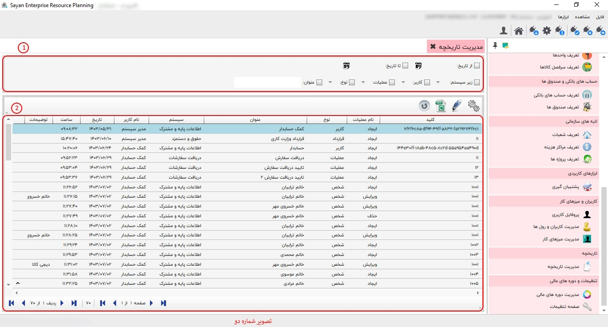
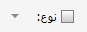

این بخش به شما این امکان را میدهد که تمام اطلاعاتی را که کاربران ایجاد، ویرایش یا حذف کردهاند، از طریق مدیریت سیستم مشاهده کنید.

برای ادامه مطلب به تصویر شماره دو مراجعه نمایید.
-کادر شماره یک:
با استفاده از این فیلتر می توانید اقلام مورد نظر در یک بازه ی زمانی را در کادر شماره ی دو مشاهده کنید.
در این قسمت می توانید زیر سیستم مورد نظر خود را فیلتر نمایید.
با فعال کردن این گزینه می توانید کاربر مورد نظر خود را فیلتر کنید.
با فعال کردن این گزینه می توانید عملیات مورد نظر خود را فیلتر کنید.
با استفاده از این فیلتر می توانید نوع عملیات مورد نظر خود را تعیین کنید.
با فعال کردن این فیلتر می توانید عنوان مورد نظر خود را جست و جو کنید.
-کادر شماره دوم: در این بخش میتوانید تمامی عملیاتی را که کاربران ایجاد، حذف یا ویرایش کردهاند، از طریق مدیر سیستم مشاهده کنید.